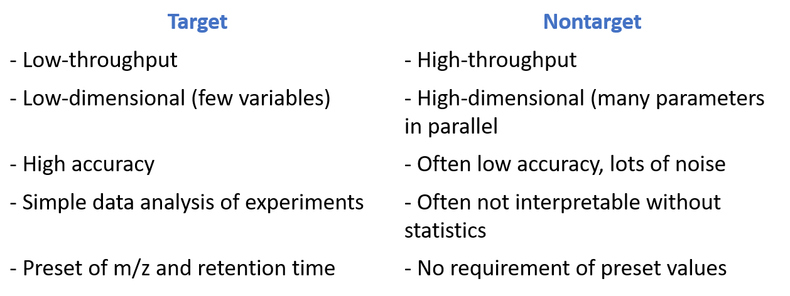
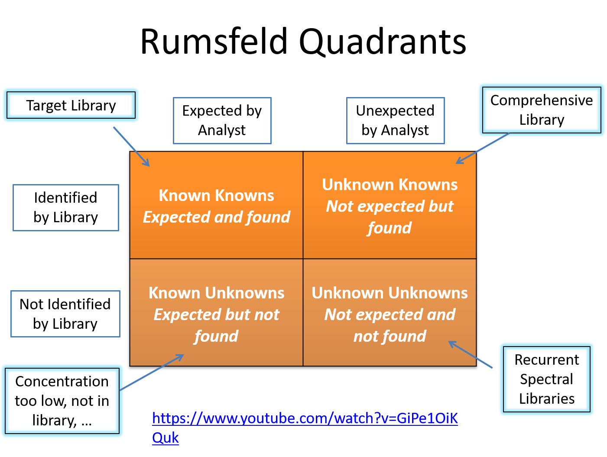

2 Introduction and concepts
- This is italic
- This is bold
- Demonstrating subscript: H2SO4
- Superscript: 13C
- Inline code:
library(tidyverse)

2.1 Terminologies
https://bmcbioinformatics.biomedcentral.com/articles/10.1186/1471-2105-15-S7-S9
Blank solvent
Chimeric spectra: (https://pubs.acs.org/doi/10.1021/pr1003856). Chimeras result from the isolation and simultaneous fragmentation of two or more distinct molecular ions within the isolation m/z range. Fragments from multiple parent ions will be present in the MS/MS spectrum, increasing the number of unidentified fragments in sequence database searches.
Deconvolution: using algorithms to pair mass spectrometric peaks with chromatographic peaks to obtain pure mass spectra.
DDA: data-dependent analysis
DIA: data-independent analysis
EIC: extracted ion chromatogram
Field blanks:
HRMS: high resolution mass spectrometry
Ion statistics: From ChatGPT (20240204)
In mass spectrometry, ion statistics refers to the quantitative aspects of the ions produced and detected during the analysis. It involves the study and interpretation of the abundance and distribution of ions generated in the mass spectrometer.
Key aspects of ion statistics include:
Ion Abundance: This refers to the relative or absolute abundance of ions at specific mass-to-charge ratios (m/z) in the mass spectrum. The intensity of peaks in a mass spectrum is a reflection of the abundance of ions with particular m/z values.
Signal-to-Noise Ratio: Ion statistics also consider the ratio of the signal (peak intensity) to the background noise in the mass spectrum. A higher signal-to-noise ratio indicates better sensitivity and a more reliable measurement.
Peak Shape: The shape of the peaks in the mass spectrum can provide information about the quality of the ion signal. Well-defined and symmetric peaks are generally desirable, indicating good resolution and instrument performance.
Dynamic Range: Ion statistics may also involve evaluating the dynamic range of the mass spectrometer, which is the ability to accurately measure ions over a wide range of concentrations.
Ionization Efficiency: Ion statistics may assess the efficiency of the ionization process, which is the probability that a particular analyte molecule will be ionized. Ionization efficiency can vary for different compounds and techniques.
Understanding ion statistics is crucial for interpreting mass spectra and obtaining reliable quantitative information from mass spectrometric analyses. Researchers and analysts often use statistical methods to process and analyze mass spectrometry data, ensuring accurate and meaningful results.
NTA: non-target analysis
Procedural blanks:
Pseudo-quantification:
QA sample: quality assurance sample
Semi-quantification:
Solvent blank
Space charge: From ChatGPT (20240204).
In the context of mass spectrometry, “space charge” refers to the accumulation of charged particles (ions or electrons) within a confined space, such as within the ionization source or in the drift region of the mass spectrometer. The presence of space charge can have significant effects on the performance and accuracy of a mass spectrometer.
Here are some key points related to space charge in mass spectrometry:
Ionization Source: In the ionization source of a mass spectrometer, ions are generated from sample molecules. If the rate of ion production is high, a large number of ions can accumulate in the ionization region, leading to a space charge. This can affect the trajectory and behavior of ions as they move through the instrument.
Drift Region: In the drift region of a mass spectrometer, where ions are accelerated and separated based on their mass-to-charge ratios (m/z), space charge effects can cause mutual repulsion or attraction among ions. This can lead to distortions in the ion trajectories, affecting the accuracy of mass analysis.
Mass Spectrometer Performance: Space charge effects can impact the performance of a mass spectrometer by causing peak broadening, reduced sensitivity, and altered ion transmission efficiency. These effects are particularly significant in high-resolution mass spectrometry where precise mass measurement is crucial.
Mitigation Strategies: Mass spectrometers are designed with strategies to minimize or compensate for space charge effects. These strategies may include the use of ion optics to focus or guide ions, the incorporation of ion traps, or the implementation of sophisticated data correction algorithms.
Collision-Induced Dissociation (CID): In tandem mass spectrometry experiments, space charge effects can influence collision-induced dissociation. Higher ion densities may lead to increased ion-molecule collisions, affecting fragmentation patterns and the accuracy of structural information obtained.
Understanding and managing space charge effects is essential for obtaining accurate and reliable results in mass spectrometry analyses. Researchers and instrument manufacturers continually work on improving mass spectrometer designs and methodologies to minimize the impact of space charge on analytical performance.
- _SSA__: Suspect screening analysis